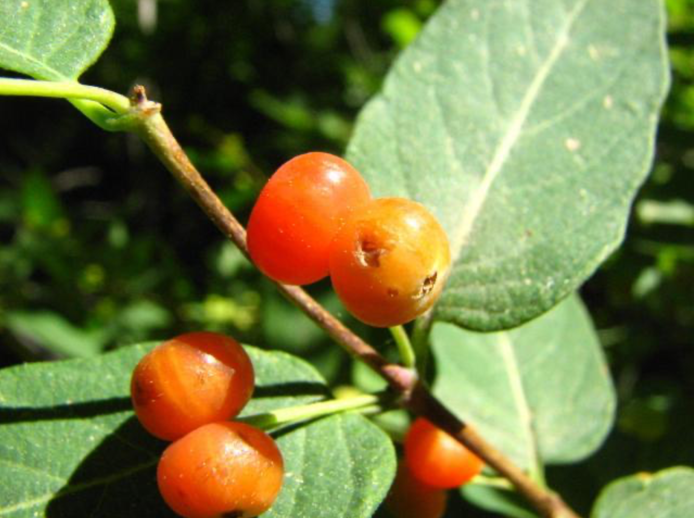
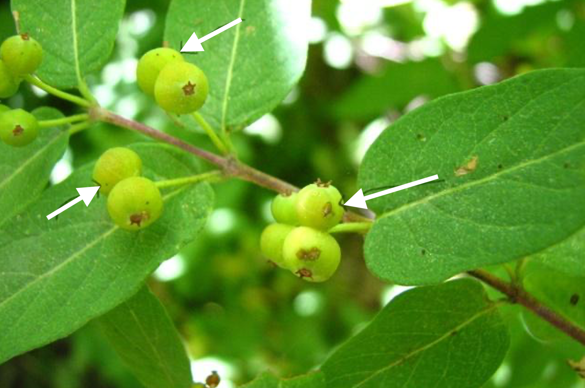

16 Reproductive Damage
16.1 Overview
This protocol aims to quantify damage by herbivores to reproductive structures of plants (i.e., flowers, fruits, and/or seeds). This is a supplement to the Primary Protocol (Chapter 14), which aims to randomly select and sample 30 plants, plus their nearest conspecific neighbor, within a population.
Objectives: The goal is to measure damage to reproductive structures on each plant within the surveyed population. Ideally, these measurements should be taken as supplemental data for the same individual plants (focal and neighbor plants) for which leaf damage was taken for the primary protocol because relating reproductive damage to leaf damage is a major research question. We recognize that this isn’t always feasible, however, so reproductive damage measurements are welcome from plant populations without leaf damage measurements.
Datasheets: Record data in the “reproData” tab in the HerbVar template datasheet, which can be found here: Section 23.2.
16.2 Preparing to Sample
16.2.1 Select a species and population to survey
We are hoping to get broad taxonomic and geographic coverage of damage to reproductive structures. Therefore, any species could be surveyed. However, to ensure that the data are comparable across sites/species/families/etc., the plants should have the following characteristics:
At least half of the individuals at your site should possess reproductive structures. If most of the plants are in a vegetative stage, you probably won’t be able to randomly sample and still get enough reproductive individuals to get a decent sample size. Ideally, >30 of the sampled plants will have reproductive damage data.
Enough of the individuals in the population should be in the same reproductive stage. If there is a mixture of flowering and fruiting plants within the population, it might be difficult to get a large enough sample size for one structure type. Additionally, different stages will likely be attacked by different herbivores.
The plants should receive quantifiable damage to reproductive structures, as either percent area removed or a count of structures that are damaged or destroyed (see Section 16.5.2 on reproductive damage types below). Sometimes this damage is obvious (i.e., chewing to flower petals, damage to fleshy fruit tissue) while other times this damage is inconspicuous (i.e., damage to seeds inside fruits). It may be helpful to survey a few plants outside the focal population to look for these different types of damage before starting. Try opening a few fruits to check for internal damage.
If your plant does not meet these requirements, please skip measuring damage to reproductive organs. Or get in touch if you have questions
16.3 Select a type of reproductive structure to quantify
Record the reproductive structure/unit you will survey, which could be any of the following: flower buds, flowers, inflorescences, immature fruits, mature fruits, infructescenses, or seeds.
Ideally, choose a reproductive structure for which there are at least 10 units per plant. We will still accept surveys for plants that have fewer than 10, especially if you can estimate a % damage for each structure (see below).
If possible, select a structure that will allow you to record counts of presence/absence of damage (method 1 in Section 16.5.2) AND a percent damage for each structure (method 2 in Section 16.5.2). This is ideal because it allows us to estimate both population-level (plant-to-plant) variation and plant-level (e.g. flower-to-flower) variation within plants, similar to the primary protocol for leaves. If this is not feasible it is also useful to record just the counts or just percent damage, whichever is feasible.
16.4 Establish a transect and select plants
Use the Primary Protocol (or an alternate protocol; see Chapter 13) to establish a transect, pick/calculate a quadrat radius, randomly select focal/nearest neighbor plants, and record covariates (plant size, life stage) for each plant (Primary Protocol Steps 14.1 - 14.3.4.b).
16.5 Record data for each plant
16.5.1 Record leaf damage
If possible, record leaf damage data for each plant (use Primary Protocol Step 14.3.4.c). Alternatively, if reproductive structures are best measured after the leaves senesce, you could mark the plants when recording leaf damage and return later to assess reproductive damage.
If you are going to record leaf herbivory and reproductive structure herbivory on the same individual plants, make sure to use the same plant IDs in both datasheets.
16.5.2 Record reproductive structure damage
For each plant you randomly select, record damage to reproductive structures in three ways:
- Presence/absence of damage Record (A) the total number of reproductive structure on the plant, (B) the number of structures with any herbivory (>0%), and (C) the number of structures that are inviable/destroyed (if possible to assess).
- If the plant has ≤ 60 structures total, please record the true numbers.
- If the plant has >60 structures total, estimate the total number on the plant, then randomly (arbitrarily) choose 60 and record values for damage to those structures. Please also make sure to record that you took a subsample of 60 (see template datasheet).
- Optional: if the plant has multiple types of damage (e.g., chewing damage, piercing damage) or obvious pathogen damage, record the numbers of structures with different types of damage.
- Structure-level percent damage Record the estimated percent damage (area removed) on 10 randomly (arbitrarily) chosen structures with herbivory damage (> 0% herbivory).
- One estimate per structure (for a total of 10 estimates). If your plant has <10 structures with damage, record an estimate for each one.
- Please strive to sample in a way that selected structures will be representative of all reproductive structures on the plant (e.g., if fruits vary in size, sample different sizes in proportion to their occurrence on the plant).
- Note that all selected structures should have > 0% damage. Note also that measuring only damaged structures makes the data collected in step 1 (see above) vital in understanding per-plant damage variation.
- Plant-level percent damage Record estimated percent damage on reproductive structures across the whole plant. For example, if a plant has 4 equally sized flowers and 2 of those flowers are 50% eaten, then whole plant has 25% herbivory. Take structure size into account when structures vary in size.
- This estimate may not be feasible for some plant species with complex reproductive structures, if so it is fine to skip!
16.5.3 Continue using the Primary Protocol for each plant
Continue using the Primary Protocol to record any additional optional data on leaf pathogens and galls (14.3.4.e - 14.3.4.f), and the distance from the randomly selected plant to its nearest conspecific neighbor (14.3.4.g).
16.5.4 Repeat data collection for nearest conspecific neighbor of selected focal plant
As in the Primary Protocol, record all the same data as focal plant except nothing for neighbor’s neighbor.
16.5.5 Continue selecting plants and recording data
Continue visiting the randomly selected points until ≥ 30 focal plants and 30 nearest neighbors have been surveyed.
16.6 Upload data in HerbVar xlsx datasheet
If you collect data on both leaf damage and reproductive structure damage in the same survey, be sure to include them in the same datasheet xlsx file (@-sec-datasheets) that you upload through the HV data portal.
16.7 Reproductive Survey Tips
- The first challenge is deciding if you can successfully survey reproductive damage. Start by exploring your plants. Casually examine at least 20 plants to get a sense of what interactions are happening at your site.
- Observe what type of damage is most common on the reproductive structures of plants in the population. Look for damage by insects that may chew on developing flowers (e.g. katydids, beetles), insects that bore into flower heads or seeds (e.g. larval weevils, leps, or flies), or true bugs that may probe/pierce the outside of fruits (looks like little black dots on the fruits), destroying the seeds inside. In many cases you will need to open the seed head/fruit to look for boring insects inside the seeds/fruit. Make sure to do any destructive sampling outside of your focal population.
- Look for signs of chewing damage inside the fruit, such as destroyed seeds and insect frass.
- Also, look for clipping damage by vertebrates that may have bitten off a whole flower or other structure.
- If enough of your plants (~50%) have the same reproductive structures and the damage is quantifiable, then you can do a reproductive damage survey!
- The best measurements of damage will depend on the type and extent of damage present. If the plant species experiences damage to multiple structures (e.g., petals, stamens, etc.), focus on the damage to the primary reproductive parts if it is not feasible to measure multiple structures.
- Consider whether you can confidently assess whether a reproductive structure (e.g. whole fruit, seed, flower) is likely destroyed or sterilized, such that it cannot successfully develop or germinate. For example, you may see entire flowers clipped, or seed-feeding insects that destroy the embryo. This is very important for understanding the potential fitness consequences of damage!
- There likely will need to be modifications for some species, but we trust collaborators to do the best they can in their systems while maintaining the overall spirit of the protocol. Keep in mind that the main goal is to capture the variability in damage rates among plants within a population, so you will want to choose a measure of flower/fruit/seed damage that best captures this variability.
- Make sure to record all of your decisions on the datasheet.
16.8 Examples of different types of damage to reproductive structures

